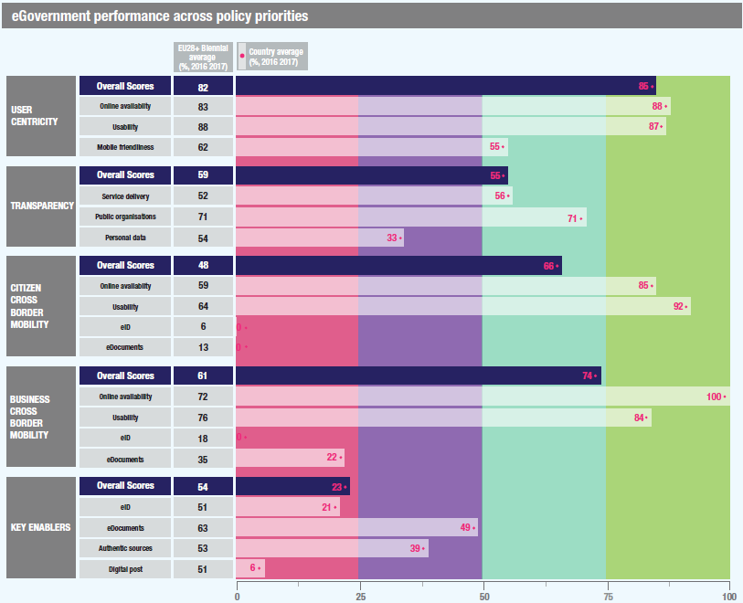

ISA2
Digital Government Factsheet 2019
Ireland
ISA2
Digital Government Highlights 6
Digital Government Political Communications 7
Digital Government Legislation 13
Digital Government Governance 18
Digital Government Infrastructure 22
Digital Government Services for Citizens 28
Digital Government Services for Businesses 42
Population: 4 830 392 (2018)
GDP at market prices: 318 459.6 (2018)
GDP per inhabitant in PPS (Purchasing Power Standard EU 28=100): 181 (2017)
GDP growth rate: 6.7% (2018)
Inflation rate: 0.7% (2018)
Unemployment rate: 5.8% (2018)
General government gross debt (Percentage of GDP): 68.4% (2017)
General government deficit/surplus (Percentage of GDP): -0.2% (2017)
Area: 69 797 km2
Capital city: Dublin
Official EU language: Irish (Gaeilge), English
Currency: EUR
Source: Eurostat (last update: 15 March 2019)
The following graphs present data for the latest eGovernment Indicators for Ireland compared to the EU average. Statistical indicators in this section reflect those of Eurostat at the time the Edition is being prepared.
Percentage of individuals using the internet for interacting with public authorities in Ireland | Percentage of individuals using the internet for obtaining information from public authorities in Ireland |
Percentage of individuals using the internet for downloading official forms from public authorities in Ireland | Percentage of individuals using the internet for sending filled forms to public authorities in Ireland |
The graph below is the result of the latest eGovernment Benchmark report, which monitors the development of eGovernment in Europe, based on specific indicators. These indicators are clustered within four main top-level benchmarks:
These top-level benchmarks are measured using a life-events (e.g. mystery shopping) approach. Eight life events are included in the overall eGovernment performance score. Four of these life events were measured in 2013, 2015 and 2017 and the other four were measured in 2012, 2014, 2016, and again in 2018. The life events measured in 2017 were Regular business operations, Moving, Owning and driving a car and Starting a small claims procedure. The life events measured in 2018 are Business start-up, Losing and finding a job, Family life and Studying.

Source: eGovernment Benchmark Report 2018 Country Factsheet
Digital Government Political Communications
Digital Government Legislation
Digital Government Governance
A single governance group – Digital Leaders – was established in early 2019. The purpose of the group is to drive and oversee digitisation of services within the Civil Service.
Digital Government Infrastructure
Digital Government Services for Citizens and Businesses
eGovernment Strategy
A separate eGovernment Strategy 2017-2020 was approved by Government and published in July 2017. The eGovernment Strategy underpinned by the Government’s commitment to be open, flexible and collaborative with people and businesses, using digitisation and technology to increase efficiency and effectiveness and constantly improve public services. The Strategy’s 10 key principles are aligned to the EU eGovernment Action Plan 2016-2020. Ireland’s 10 key actions are the following:
Our Public Service
Our Public Service 2020, published in December 2017, is the new framework to drive development and innovation in the Irish public service. This new phase of public service reform will focus on supporting sustainable, continuous progress across the public service. It aims to build a stronger, more agile, public service and to deliver better quality services to the Irish public.
The framework is built across three pillars and includes both new initiatives and actions that build on reforms already in place. These are:
The development of digital services and eGovernment is central to the Delivering for Our Public pillar and seen as key to improving service delivery as is making better use of data and sharing data more effectively between organisations.
The implementation of the framework began in 2018.
Public Service ICT Strategy
A Public Service ICT Strategy developed by the Office of the Government Chief Information Officer (OGCIO) in collaboration with the Public Service Chief Information Officer (CIO) Council was approved by Government and published in January 2015. The Strategy set out the Government’s overall approach to ICT and contained a series of principles to ensure momentum was maintained in this area.
The Public Service ICT Strategy set out a high-level vision to reinforce ICT’s role in supporting Public Service Reform and transformation. It identified a number of key strategic objectives that will set the future direction for innovation and excellence in ICT within the Public Service:
The Strategy builds on the ICT foundations that will deliver future government services. It is aligned with the objectives of the Public Service Reform Plan 2014-2016 and the goals of the Civil Service Renewal Plan and has the overarching objective of providing better outcomes for citizens, businesses and public servants through embracing the latest technological advances.
In the course of 2016, the Irish Government ran numerous in-depth consultations with Secretaries General, Heads of ICT in Government Departments, Industry, and other stakeholders to develop the Public Service ICT Strategy. The outcome of these consultations was an 18 Step Action Plan to develop the five strategic themes of the Strategy (Digital, Data, Build to Share, Governance and Capability). Implementation of the Action Plan is currently underway.
In the Public Service ICT Strategy, data have been identified as a critical enabler of better decision-making and more effective and efficient service provisioning. Government has taken steps to address some of the challenges by embarking on the National Data Infrastructure (NDI), which concerns itself with the consistent and reliable identification of data that relates to a particular location – through the use of an Eircode; person – through the use of a Personal Public Service Number (PPSN); business – through the use of a Unique Business Identifier (UBI). The consistent identification of these core data assets is crucial to successfully linking data, joining up government, and delivering integrated services. The Public Service Data Strategy 2019 – 2023 sets the NDI (and the Data Sharing and Governance Act 2019) in the wider context of building a coherent data management ecosystem for the Public Service.
The 18 Step Action Plan developed by the Office of the Government Chief Information Officer to progress the Public Service ICT Strategy focuses on five strategic themes. There has been good progress across all five pillars:
Open Data Strategy
A new Open Data Strategy for the period 2017-2022 was published in July 2017. This strategy built on achievements made since the launch of the Open Data Initiative in 2014. Its two core objectives are, firstly, the publication of high value government data in open format, making it publicly available and freely reusable, secondly, engaging with a broad community of stakeholders to promote its social and economic benefits. The Strategy sets out seven strategic themes which will guide the Open Data Initiative over the lifetime of the Strategy:
Ireland’s Open Data Portal, operated by the Government Reform Unit, now provides access for reuse and redistribution to over 5 000 datasets held by public bodies
The Open Data Portal was ranked number 1 in the European Commission’s Open Data Maturity assessment for 2017.
Open Government Partnership National Action Plan
In December 2016, Ireland published its Open Government Partnership National Action Plan 2016-2018.
An online portal was deployed to reach a wide audience, encourage discussion, and inspire a sense of community. Civic forums were also held for further input and insight from civil society. Feedback and recommended actions were then collected and analysed, and then compiled in a first draft that was opened to comments. The Open Government Partnership was built on continuous engagement with the public and Civil Society.
The Action Plan comprised 15 commitments across four main themes:
The National Action Plan has run until the end of June 2018.
No political communication was adopted in this field to date.
National Cyber Security Centre (NCSC)
The National Cyber Security Centre (NCSC) is the operational side of the Department of Communications, Climate Action and Environment in regard to network and information security. The NCSC encompasses the State's national/governmental Computer Security Incident Response Team (CSIRT-IE). The State works to reduce risks to Internet infrastructure and services in the interests of a resilient, secure and trustworthy online environment that citizens and businesses can rely upon for social and economic interaction. The NCSC works with other Government Departments, key industries such as energy and telecommunications and with international partners in the interests of securing or key digital assets, and the infrastructure that relies on these.
Public Service Data Strategy
The Public Service Data Strategy 2019 – 2023 acknowledges the principles for and benefits derived from establishing base registries. It contains a specific action to ‘Develop base registries and the processes required to govern their operation’. The Data Sharing and Governance Act 2019 includes powers to establish base registries.
The National Public Procurement Policy Framework
In 2018, the National Public Procurement Policy Framework set out the overarching policy framework for public procurement in Ireland. It consisted of five thematic strands:
The framework sets out the procurement procedures to be followed by Government Departments and State Bodies under national and EU rules. The framework supports contracting authorities, including the OGP, the four key sectors (Health, Education, Local Government and Defence), individual Departments, Offices, commercial and non-commercial State bodies, and private entities which are subsidised 50% or more by a public body, when awarding contracts for works, goods and services. It supports and enables Public Bodies to adopt procedures to meet their Public Procurement requirements and facilitates compliance with EU and National Procurement Rules.
eHealth Strategy
The purpose of the strategy is to provide an outline of eHealth and demonstrate how the individual citizen, the Irish healthcare delivery systems – both public and private – and the economy as a whole will benefit from eHealth. Priority areas for initial development include ePrescribing, online referrals and scheduling, Telehealth (particularly relating to the management of chronic disease) and the development of summary patient records.
Knowledge and Information Strategy
In May 2015, the Office of the Chief Information Officer at the Health Service Executive (HSE), published the Knowledge and Information strategy which delivers the benefits of eHealth in Ireland. The strategy aims to deliver truly patient centred, safe and excellent integrated care. The strategy builds upon the eHealth Vision for Ireland and outlines how integrated information and enabling technology will support the delivery of innovative, safe and high-quality patient care to meet the needs of our population across all patient pathways and care settings. This strategy also outlines how they transform our organisation, from a knowledge and information perspective, to meet the delivery challenge ahead and to support the vision and values outlined in the HSE Corporate Plan.
Technology Skills 2022: Ireland’s third ICT Skills Action Plan
Ireland’s third ICT Skills Action Plan 2019-2020 is a plan to meet the country’s high-level ICT skill needs. This Action Plan sets out to achieve a step-change in Ireland’s supply performance, through a focussed set of impactful actions that will underpin the State’s continuing status as a global centre for high-level ICT talent. This ambition is being realised through a concerted partnership approach between Government, industry, and the education and training sector.
Public Service Data Strategy
The Public Service Data Strategy for the period 2019-2023 was published in December 2018. It provided a detailed vision with a set of goals and actions to deliver a more joined-up whole-of-Government approach to how data is used and managed within the public service. It aimed to put in place a series of measures to improve how data is governed, managed and re-used in a secure, efficient and transparent manner, for the benefit of citizens, businesses and policy makers.
Its implementation will put Government in a better place to respond to service demands in an agile manner, by:
Research Priority Areas
In 2012, Government introduced Research Prioritisation, which aligns the majority of competitively awarded public investment in research with 14 priority areas. Innovation
2020, Ireland’s strategy for research and development, science and technology, commits to reviewing the priority areas to ensure that they are still valid and to refresh and revise them, if necessary, in the light of changed circumstances. The objective is to ensure that Ireland is favourably positioned to benefit from global opportunities now and into the future, by responding to worldwide megatrends and challenges that are shaping the global economy and Ireland’s place in it. There have been several revisions and updates to both the themes and the priority areas to reflect changing circumstances since 2012. Then, in March 2018, the Government announced the revised Research Priority Areas for 2018 – 2023.
Declarations on Artificial Intelligence, Blockchain and Innovation Radar
In April 2018, the Minister for Trade, Employment, Business, EU Digital Single Market and Data Protection signed EU Declarations on Artificial Intelligence, Blockchain and Innovation Radar. The aim was to harness opportunities for Ireland in the technology sector. These Declarations defined areas where agreement had been reached by Member States for future cooperation.
Virtual Currencies and Blockchain Technology
In March 2018, the Minister for Finance and Public Expenditure and Reform, announced the creation of an internal working group (the Intra-Departmental Working Group) to monitor further developments in the areas of virtual currencies and blockchain technology. The aims of the Intra-Departmental Working Group are as follows:
Disruptive Technologies Innovation Fund
The National Development Plan (NDP) under Project Ireland 2040 confirms the establishment of a €500 million challenge-based Disruptive Technologies Innovation Fund (DTIF) that will see investment in the research, development and deployment of disruptive technologies and applications on a commercial basis. Specific priority areas include Robotics, Artificial Intelligence, Augmented and Virtual Reality, Advanced and Smart Manufacturing, and Smart and Sustainable Food Production and Processing
No legislation was adopted in this field to date.
Freedom of Information Act
A new Freedom of Information Act came into force on 14 October 2014. It provides for the commitments in relation to freedom of information contained in the Programme for Government by removing the main substantive restrictions in access to official information introduced in 2003, extending FOI to all public bodies unless specifically exempt in whole or in part and providing a framework for the extension of FOI to non-public bodies in receipt of significant funding from the Exchequer. The legislation also provided an opportunity for a necessary consolidation modernisation and updating of the legislation. The Freedom of Information Acts 1997 and 2003 were repealed under the new Act.
European Communities (Re-Use of Public Sector Information) Regulations
In December 2015, the Minister for Public Expenditure and Reform, Mr Brendan Howlin T.D., signed statutory regulations which transposed Directive 2013/37/EU on the re-use of Public Sector Information (PSI) into Irish law, thereby enhancing the rights of Irish citizens and businesses to re-use existing information held by public bodies in new products and services.
In preparation for the review of the Re-Use of Public Service Information (PSI) Directive, the European Commission launched a public online consultation to seek views on how to improve accessibility and re-use of public and publicly funded data. It also considered the question of access to and use of privately held data that is in the public interest. The final date for submissions was 12 December 2017.
Following the consultation process and review, in April 2018 the European Commission adopted a proposal to revise the Directive on the Re-use of Public Sector Information. It recommended overcoming the barriers, identified in an earlier impact assessment, that prevented the full re-use of public sector information. The proposals also endorsed the inclusion of public utilities and research data under the remit of the Directive.
Directive 2013/37/EU (which amended an earlier PSI Directive from 2003, Directive 2003/98/EC)) affects how the information can be re-used, once it has been legitimately accessed, by placing obligations on the public sector to the benefits of re-users. It amended the 2003 PSI regime in the following ways:
These enhancements complemented the Government’s overall open data agenda, which aimed to encourage making available certain types of data and information held by public bodies (for example data on transport, education, crime and environment) for the benefit of those citizens and organisations who wish to make use of it for either commercial or non-commercial purposes.
Information on the relevant Statutory Instruments, guidance and licences relating to the re-use of PSI data can be found at https://data.gov.ie/psi.
Single Digital Gateway
Ireland is engaging as required with the Single Digital Gateway Regulation, which has as its main objective the provision of easy online access to Single Market information, procedures, assistance and advice for citizens and businesses.
eIDAS regulation
The Regulation does not require separate legislation in Ireland. Ireland is engaging with the eIDAS Regulation as required and has plans to notify the MyGovID eID service in 2020/2021 in line with the Regulation. Ireland’s trust services infrastructure is nearing completion to be in line with the regulation.
Data Sharing and Governance Act 2019
The purpose of this legislation is to provide a generalised legal basis for the sharing of data between public bodies while also setting out appropriate safeguards under which such sharing can take place. The Act provides a generalised legal basis for data sharing between public bodies for specific, legitimate purposes, including:
In addition, the Act includes a number of provisions to ensure better data governance across the public service through:
Other key provisions include powers to:
The Data Protection Act 2018, signed into law on 24 May 2018, changed the previous data protection framework, established under the Data Protection Acts 1988 and 2003 (pdf). Its provisions include:
The Data Protection Act also transposed the Law Enforcement Directive (Directive (EU) 2016/680) into national law.
General Data Protection Regulation (GDPR)
The GDPR was implemented in Ireland. One of the main objectives of the act was to lay down rules relating to the protection of natural persons with regard to the processing of personal data and rules relating to the free movement of personal data.
ePrivacy Regulations
The 2011 ePrivacy Regulations (S.I. No. 336 of 2011 Electronic Communications Networks and Services - Privacy And Electronic Communications) aim to providing for data protection and privacy connected with electronic communications networks and services and to enhance the security and reliability of such networks and services.
Copyright and Related Rights Act
This Act reformed Irish copyright and related rights law, bringing it fully into line with the requirements of EU and international law in this area.
Office of Government Procurement
The Office of Government Procurement (OGP) commenced operations in 2014 and together with four key sectors (Health, Defence, Education and Local Government), has responsibility for sourcing 16 categories of goods and services on behalf of the Public Service. In addition, the OGP is also responsible for the procurement policy and procedures.
National Public Procurement Policy Framework
A revised National Public Procurement Policy Framework, published in 2018, set out the overarching policy framework for public procurement in Ireland. The framework consisted of five strands:
The framework set out the procurement procedures to be followed by Government Departments and State Bodies under national and EU rules. It supported contracting authorities, including the OGP, the four key sectors (Health, Education, Local Government and Defence), individual Departments, Offices, commercial and non-commercial State bodies, and private entities subsidised 50% or more by a public body, when awarding contracts for works, goods and services. It supported and enabled Public Bodies to adopt procedures to meet their Public Procurement requirements and facilitates compliance with EU and National Procurement Rules.
The principal EU Directives are:
These have been transposed into Irish Law by way of national regulations contained in Statutory Instruments as follows:
Information on these and all relevant procurement legislation, Directives and Regulations can be found here.
eInvoicing Legislation
The Office of Government Procurement is responsible for eInvoicing in Ireland. There is no legislation in place specifically relating to the support for, or provision of, electronic invoicing in the Public Sector. There are also no common platforms across the Public Sector either.
Nevertheless, Ireland transposed Directive 2010/45/EU, which establishes electronic invoices on an equal footing with paper invoices and is transposing the European Directive on eInvoicing (2014/55/EU) in public procurement. The eInvoicing Ireland programme working with the Office of Government Procurement and Public Sector partners has put in place an eInvoicing procurement Framework. The Framework offers compliant eInvoicing services and solutions for shared services and co-ordinating facilities as well as individual public bodies, to receive and process eInvoices in accordance with the European Standard and the national approach to implementing the eInvoicing Directive. The services and solutions range from online portals that facilitate basic compliance to more integrated straight-through-processing options.
Since 18 April 2019, Central Government contracting authorities and entities are required to receive and process eInvoices that comply with the European Standard on eInvoicing in public procurement. From 18 April 2020, all contracting authorities and entities will be required to receive and process eInvoices that comply with the European Standard on eInvoicing in public procurement.
The Companies Act 2014
The Companies Act 2014 covers legal provisions for the Business Registry. The Act prescribes the provisions for the various types of companies in existence as well as the allowed organisational frameworks they can function within. Furthermore, the Act states that registration offices for companies shall be set up in places deemed necessary by the Minister for Public Expenditure and Reform, as well as that each office shall be headed by a Registrar in charge of administering it.
Land and Conveyancing Law Reform Act 2009
The Land and Conveyancing Law Reform Act 2009 stated that the Land Registry has the meaning given to it by section 7 of the Act of 1964, so that the central office shall be in Dublin while local offices are located in every other county in Ireland. In line with this, the central office is the one responsible for registering all land in the State, while the Land Registry as a body comprises the collective of the central and local offices.
Civil Registration Act of 2004
The Civil Registration Act of 2004, along with its Amendment from 2014, provided separate definitions as to what was understood by registration of births and stillbirths, adoptions, deaths, marriages, divorces. This was mostly due to historical reasons, as separate registries were kept for each of these different life events. For example, Part 3 Registration of Births and Stillbirths 18 stated: ‘In this Part, ‘‘the register’’ means, as the context requires, the register of births or the register of stillbirths and cognate words shall be construed accordingly.
Electronic Commerce Act
The Electronic Commerce Act became law on 20 September 2000. It implemented the EU Directive on a Community framework for electronic signatures (1999/93/EC) and, in part, the EU Directive on electronic commerce (2000/31/EC).
The Act provided (with some exceptions) for the legal recognition of electronic signatures, electronic writing and electronic contracts. It authorised the use of encryption and set the rights and obligations of Certifications Service Providers (CSPs).
European Communities (Directive 2000/31/EC) Regulations
The Minister for Enterprise Trade & Employment signed the regulations in 2003 with a view to giving effect to those remaining provisions of the EU Directive on electronic commerce (2000/31/EC) not transposed into Irish law by the Electronic Commerce Act.
Data-Sharing and Governance Act 2019
The Data Sharing and Governance Act 2019 was signed into law on 4 March 2019 and is awaiting commencement. The Act comes in the wake of the GDPR and Data Protection Act 2018 in order to clarify and strengthen the data sharing rights and obligations of public bodies. The Act paves the way for more efficient and cost-effective service delivery by public bodies by providing a clear legal basis for the sharing of personal data in certain circumstances. The aim is to reduce the administrative burden associated with the need for individuals to provide their personal data to numerous public bodies. The Act allows for the sharing of personal data between public bodies where the sharing is for the performance of a function of either of the public bodies. The Act provides for the establishment of a personal data access portal. This is a portal that would allow individuals to view their personal data as well as information in relation to any data breaches affecting their personal data and data sharing agreements under which their personal data is processed. Besides, the Act allows the Minster to designate base registries for use by public bodies so that they can access personal data without having to collect it directly from service users. A base registry will have an owner who must ensure the personal data is accurate and up to date.
There is no specific legislation in this area; existing laws apply where appropriate.
Department of Public Expenditure and Reform
The overall responsibility for the eGovernment policy and the provision of central eGovernment infrastructure and services lies with the Department of Public Expenditure and Reform.
Paschal Donohoe TD Minister for Finance, Public Expenditure and Reform
Contact details: Department of Public Expenditure and Reform Government Buildings Upper Merrion Street, Dublin 2 Tel.: +353 1 676 75 71 Fax: +353 1 678 99 36 E-mail: minister@per.gov.ie Source: http://per.gov.ie/ |
Patrick O’Donovan TD Minister of State at the Departments of Finance and Public Expenditure and Reform, with special responsibility for Public Procurement, Open Government and eGovernment
Contact details: Department of Public Expenditure and Reform Government Buildings Upper Merrion Street, Dublin 2 Tel.: +353 1 676 75 71 Fax: +353 1 678 99 36 E-mail: patrick.odonovan@oir.ie Source: http://per.gov.ie/ |
Barry Lowry Government Chief Information Officer Contact details: Department of Public Expenditure and Reform Government Buildings Upper Merrion Street, Dublin 2, Tel.: +353 1 676 75 71 Fax: +353 1 678 99 36 E-mail: barry.lowry@per.gov.ie Source: http://per.gov.ie/ |
Department of Public Expenditure and Reform
The Office of the Government Chief Information Officer (OGCIO) within the Department of Public Expenditure and Reform has overall responsibility for coordinating the implementation of eGovernment policy across the Public Service in Ireland.
Government Departments and Agencies
Individual Government Departments and Agencies are responsible for developing specific eGovernment plans in relation to their own areas of operation and for implementing eGovernment projects within the framework of their competences.
Department of Public Expenditure and Reform
The OGCIO within the Department of Public Expenditure and Reform monitors eGovernment development and provides reports as required to Government.
Department of Employment Affairs and Social Protection
The organisation of the Civil Registry is distributed in the Republic of Ireland. It is managed by the General Registry Office, under the Department of Employment Affairs and Social Protection. The birth, death and marriage of a person in Ireland can be registered at any of the 26 local registrar’s offices throughout the country and the General Register Office located in Roscommon. The information entered in the local registries is then made available through the General Registry, which is the central civil repository for records relating to births, stillbirths, deaths and marriages. Furthermore, there is an automatic exchange of relevant information which can be exemplified through the fact that the details of birth registrations are forwarded by the General Registry Office to the Department of Social Protection to automatically generate Child Benefit claims on behalf of parents.
Department of Transport, Tourism and Sport
Similarly, the Vehicle Registry’s organisation is distributed through local Motor Tax Offices, where registrations of purchase, sale, import and vehicle modifications can be made. In this sense, the Vehicle Registry is headed by the Road Safety Authority. It operates under the wings of the Department of Transport, Tourism and Sport. Registrations are done at any of the 29 local Motor Tax Offices, whose records in turn serve as proof of ownership or proof of any necessary actions undertaken with regards to vehicle registrations. The National Vehicle and Driver File (NVDF) constitute the national driver and vehicle registries and has a legal basis in Section 60 of the Finance Act 1993.
Department of Business, Enterprise and Innovation
The Business Registry in Ireland, known as the Companies Registration Office (CRO), is organised in a centralised manner. Its core functions are the incorporation of companies and the registration of business names, the receipt and registration of post incorporation documents, the enforcement of the Companies Act 2014, as well as making information available to the public. The CRO registers only limited companies, thus excluding companies such as sole trader and other types such as charities. The Companies can be registered online, which is now the most used option, in turn allowing for direct processing of the requests at the CRO without having to pass through any decentralised or alternate channels. Furthermore, in line with CRO’s core functions and the Companies’ Act 2014, almost all of the information filed is available to the public, usually for a fee.
Property Registration Authority
The Irish Land Registry is operated and maintained by the Property Registration Authority of Ireland (PRA), the statutory body responsible for land registration that also provides information on legislation relevant to property registration. The Irish Land Registry is one of the most advanced in Europe and is thus fully computerised and all registered parcels are digitised. This in turn signifies that any entry or registration in the Land Registry must be done via online channels provided by the PRA and it also demonstrates that the Land Registry is coordinated and managed in a centralised way, similarly to the Companies Registration Office. Additionally, applications for registration are in fact prepared by qualified legal practitioners on behalf of the customer and are then submitted to the PRA for registration.
Office of the Comptroller and Auditor General
The Office of the Comptroller and Auditor General is tasked with:
The Data Protection Commission (DPC) is the national independent authority responsible for upholding the fundamental right of individuals in the EU to have their personal data protected. The DPC is the Irish supervisory authority for the GDPR, and also has functions and powers related to other important regulatory frameworks including the Irish ePrivacy Regulations (2011) and the EU Law Enforcement Directive.
Office of the Information Commissioner
The main functions of the Information Commissioner are the following:
Local Councils
Local Authorities develop strategies based on their respective ICT and eGovernment needs.
The Local Authorities work in the context of national strategies and through relevant initiatives of the Local Government Management Agency.
Local Councils
Local Authorities implement their respective strategies with the support of the Local Government Management Agency (LGMA).
Local Government Management Agency
The Local Government Management Agency (LGMA) is a state agency of the Department of Housing, Planning, Community and Local Government. It was established in 2012 to provide a range of services to the Local Government Sector and was created following the merger of the Local Government Computer Services Board, Local Government Management Services Board and An Comhairle Leabharlanna. The LGMA provides a range of services within the context of its statutory remit, in support of co-ordinated and cost-effective delivery of Local Government services and policy.
The local authorities work in the context of national strategies and initiatives.
Local Government Audit Service (LGAS)
The LGAS is an external audit service providing independent credibility to the financial stewardship function of local authorities and other bodies.
The Local Authorities are subject to the same data protection legislative regime as at national level.
Government portal
The gov.ie website is a central portal for online government services. It provides, allowing citizens with the ability to search and find all government services in a convenient manner. Services have been aggregated from across the public sector, and new services are constantly being added.
Work is currently underway to further develop the Portal, (referred to as a Digital Service Gateway in the eGovernment Strategy) including a project to retire separate Departmental (Ministry) web-sites and re-apprise the content before moving over to the gov.ie site. Progress is ongoing with a view to completing during 2020.
In addition, there are plans to introduce a single log-on facility in 2019, using MyGovID, Ireland’s Public Service e-ID; and there are plans to establish a Digital Post-Box, which will allow citizens to request that key documents are placed in their own encrypted area of a Government provided digital vault.
Open Data Portal
The portal, implemented in 2014, promotes innovation and transparency through the publication of Irish Public Sector data in open, free and reusable formats. Ireland was ranked 1st across the EU28 in the Open Data maturity benchmark for 2018.
GeoHive
GeoHive is an initiative by Ordnance Survey Ireland to provide easy access to publically available spatial data.
Citizens Information website
Launched in April 2001, the Citizens Information website is run by the Citizens Information Board, Ireland's national agency responsible for providing information and advice on social services, operating under the aegis of the Department of Employment Affairs and Social Protection. The website provides guidance on a wide range of subjects, such as employment rights, buying a home, moving abroad and education.
The subjects covered are divided into 14 categories, representing life events and activities, allowing users to readily access a relevant topic. Sourced from a wide variety of service providers and agencies, the information is backed up by case studies, supporting documentation and downloadable forms.
Irish Government News Service portal
The Irish Government News Service portal affords a view of government from the vantage point of Government Buildings itself. It reviews the wide range of government activity and then reports certain key events as news. All government press releases are accessible either via RSS feed or links to all Government Departments. The site’s central task is to select a variety of events and report on them objectively. It also features ‘Issues’, where useful thematic information, not tied to a particular date, is presented. It enables people with an interest in Government dealings to view the latest developments on one website. It is produced by a team in Government Buildings, involving the Government Information Service, Government Press and IT.
Government Networks (GN)
GN is a privately managed, wide area multi-carrier, national network (WAN) connecting public service agencies on a data, voice and video capable network. It is designed primarily to facilitate easy, efficient, secure and reliable communication between Government agencies, and to support existing and future Government applications. A mechanism for providing agencies with a secure access to the Internet is included, as well as a means for agencies to securely host Internet services. The Department of Public Expenditure and Reform in conjunction with the Government Networks Programme Board has established GN on behalf of the non-commercial public sector.
GN offers a number of potential cost and operational benefits: inter-agency collaboration and delivery of joined-up government services; access for all agencies to network capability and products/technology (regardless of size); execution of a number of standard day-to-day infrastructure services allowing agencies to focus on their core programmes and services; improvement of security of government information systems; incorporation of Internet access costs for Government agencies into one highly resilient infrastructure; commercial advantages of an aggregated procurement approach, resulting in reduced costs.
As a result of Government Networks, public service bodies in approximately 45 towns and cities in Ireland now have access to high speed, resilient network connectivity and the rollout is continuing nationwide.
In 2018 GN expanded the provision of high speed, high capacity networks to smaller towns that have heretofore relied on lower capacity links. A centralised shared Wi-Fi infrastructure was also deployed in 2018, which allows Public Service Bodies to deploy secure corporate and guest wireless networks in multiple locations with minimum investment in infrastructure.
Death Events Publishing Service
The Department of Public Expenditure and Reform runs the Death Events Publishing Service. This is a service that distributes information on death events to a range of public sector bodies to take action as appropriate in relation to services that the deceased person(s) may have been receiving. The information contains details on all deaths notified to the General Register Office. It is currently updated once per week.
Electronic Exchange of Social Security Information
The EU regulations on co-ordination of social security provide for the introduction of a system of electronic data exchange between Member States. The aim of the system is to replace the existing paper-based exchange of information with a view to improving the processing of benefit claims based on EU Regulations. Ireland’s Electronic Exchange of Social Security Information (EESSI) Access Point implementation is up and running with the first Business Use Cases (BUCs) to go live by June 2019.
Personal Public Service Number (PPSN)
The PPS number is a unique personal identifier and is used extensively by Government Departments and other authorised users to provide the public with secure access to a wide range of public services. State agencies that use PPS numbers to identify individuals include the Department of Employment Affairs and Social Protection, the Revenue Commissioners and the Health Service Executive (HSE). It is mandatorily assigned to every Irish child at birth. The PPSN may be used in:
The 'SAFE' programme, jointly sponsored by the Departments of Social and Family Affairs and of Public Expenditure and Reform, has defined levels of person registration and authentication.
Public Service Card (PSC)
The PSC ensures that people can access public services across a number of channels, including online, via telephone or in person at a public office, with a minimum of duplication while preserving their privacy to the maximum extent possible.
In February 2011, approximately three million PSCs started being issued for citizens over 16 years old, allowing access to public services. Issuing a PSC involves a face-to-face registration process which includes the collection of a photograph and signature (in line with the “SAFE” programme). Online appointments to be registered for a Public Services Card (or to get a PPS number) can be made at https://www.mywelfare.ie/. PSCs are replacing cards currently in use, such as the Social Services Card and the Free Travel card, with highly secure cards featuring laser engraving personalisation, a contact chip, a signature, a photograph and an expiry date. The rollout of the Public Services Card (PSC) is ongoing with over 3 million cards issued by the end of 2017.
The PSC and its online equivalent MyGovID enables citizens to have a single approach to online identity across the public service, provide more and better services online, create a user centric digital government, and align Ireland with European initiatives such as the Digital Single Market and the European eGovernment Action Plan 2016-2020.
MyGovID
MyGovID is a new single online identity for Irish citizens allowing access to a range of online public services more easily, using only one password. MyGovID gives users a safer and faster access to public services from their PC, smart phone or a tablet device. MyGovID is built on the Public Services Card, linking a ‘real world’ identity to an online identity, and is designed for sharing and integration across government departments and public bodies.
MyAccount
In 2015, Revenue introduced myAccount, which is a single access point for secure online services (excluding ROS) such as PAYE Anytime, Local Property Tax, Home Renovation Incentive and many more using a single login and password.
Passports
Irish citizens can renew their passport book, renew their Passport Card, or apply for their first Passport Card using an online Passport Renewal Service. It can be used by Irish citizens living anywhere in the world and is available 24 hours a day, 7 days a week, 365 days a year.
A Passport Card, first introduced in 2015, can be used by Irish citizens for travel within the EU/EEA and Switzerland. The Card is available to all Irish citizens who are over 18 years and in possession of a valid Irish Passport. Applications can be submitted online or through the free app from anywhere in the world.
Irish citizens who hold an Irish Passport or held an Irish Passport that expired within the previous five years can now apply online for renewal.
Electronic Passports (ePassports) have been issued by the Passport Office within the Department of Foreign Affairs since October 2006. An ePassport is the same as a normal machine-readable passport but it also has a small integrated circuit or chip embedded in the photo page. The chip securely stores a digitised image of the photo and personal details of the passport holder as they appear on the data page of their passport. The chip allows facial recognition technology at border controls.
www.eTenders.gov.ie has been developed as part of the Irish Government's Strategy for the Implementation of eProcurement in the Irish Public Sector. The site is designed to be a central facility for all public sector contracting authorities to advertise procurement opportunities and award notices. The site is managed by The Office of Government Procurement (OGP). The OGP sets the policy on content and functionality of the site however day to day management and maintenance, as well as development, of the site has been outsourced to a private company, EU-Supply.
The site displays, on a daily basis, all Irish public sector procurement opportunities currently being advertised in the Official Journal of the European Union (OJEU), as well as other lower-value contracts uploaded to the site from awarding authorities. At any given time, it will contain all open opportunities in the form of Tender Notices, Prior Indicative Notices (PIN) and Contract Award Notices (CAN). It also provides associated tender documents (where available) which can be downloaded from the site.
The site has the functionality to allow Awarding Authorities to publish notices on the site which will then be sent to the OJEU automatically. Other functionality includes: facility for conducting online clarifications via a Q&A facility; online submission of tenders; user and notice management facilities to awarding authorities; email alerts and response management facilities to suppliers. There is also comprehensive notice search and help functions. www.eTenders.gov.ie also provides comprehensive information on procurement rules and guidelines. These include European Directives and National Guidelines on the Public Procurement Process.
The site offers the opportunity to widen the net of potential suppliers to the Irish Public Sector. There is no charge to contracting authorities or suppliers for this service. The eTenders site is also freely available for use by the public to view tender notices published by Public Contracting Authorities.
eInvoicing Ireland Programme
The eInvoicing Ireland programme working with the Office of Government Procurement and Public Sector partners has put in place an eInvoicing procurement Framework. The Framework offers compliant eInvoicing services and solutions for shared services and co-ordinating facilities as well as individual public bodies, to receive and process eInvoices in accordance with the European Standard and the national approach to implementing the eInvoicing Directive. The services and solutions range from online portals that facilitate basic compliance to more integrated straight-through-processing options.
Since 18 April 2019, Central Government contracting authorities and entities are required to receive and process eInvoices that comply with the European Standard on eInvoicing in public procurement. From 18 April 2020, all contracting authorities and entities will be required to receive and process eInvoices that comply with the European Standard on eInvoicing in public procurement.
No particular infrastructure in this field was reported to date.
Build to Share Applications
Build to Share Applications are built and maintained by the Office of Government CIO, which delivers a suite of corporate support applications common across Departments. The central development of a common applications suite for use by all Departments was identified in the Public Service ICT Strategy as an opportunity to drive efficiencies and savings. It consists of:
There is an ongoing rollout programme to implement all these applications across Departments and agencies. All Ministerial Departments are now on-boarded to the platform as well as a growing number of agencies. The process to on-board other organisations is at an advanced stage which will bring the user-base of Build to Share Applications close to 30 000 potential users. Implementation will continue, on a phased basis, through 2019 and beyond.
National Mapping
Ordnance Survey Ireland (OSi) is responsible for creating and maintaining the definitive mapping records of the State. OSi has designed and developed a standardised, authoritative digital referencing framework that enables the consistent referencing and integration of national data related to location. This framework, known as PRIME2, provides the means for GIS data users to accurately integrate and use multiple data sources to provide for better analysis and decision making, optimising resources and delivering efficiencies.
OSi provide a range of online services including GeoHive and MapGenie.
No particular infrastructure in this field was reported to date.
Companies Registration Office
The Companies Registration Office (CRO) registers and incorporates companies in Ireland as well as filing their annual returns. The CRO has a number of core functions:
Land Registry and related services
Landdirect.ie is an online search application offering easy access to their services. The application gives access to its interactive map for free to all customers. By accessing its extensive digital register, all users can conduct mapping searches, search by location or address, view details of all property registered in the land Registry and order official copy documents. In addition, account holders have access to a wider range of services tailored for the professional user.
Single Customer View
Every resident of Ireland appears in a number of public service databases. For example, a typical person of working age appears in the databases of the Department of Employment Affairs and Social Protection (PPSN), Revenue (PAYE), HSE (Drug Payment Scheme), Department of Foreign Affairs (Passport) and Department of Transport (driver licencing and vehicle registration).
The Single Customer View is a system which takes records from these databases and links them together. The data stored is the ‘Public Service Identity’ dataset as defined in the Social Welfare legislation.
The Department of Public Expenditure and Reform maintains and operates the Single Customer View on behalf of the Department of Employment Affairs and Social Protection which is the Data Controller for the purposes of Data Protection.
Registration of Property Transactions
The Property Registration Authority, the State organisation responsible for the registration of property transactions in Ireland, provides a wide range of spatial information online to customers. This has been facilitated by the successful roll-out of a major programme of state-of-the-art Information Technology, the most notable of which have been Integrated Title Registration Information System – ITRIS – (1999-2002); Digital Mapping Project (2005-2010); and conversion of the entire register and associated indices from paper into a fully digitised format (2006-2009). As a result of these projects there are now 2.14 million titles, representing almost 2.8 million individual parcels of land, registered in the Irish Land Registry.
By accessing an extensive digital register, available through Landdirect.ie, all users can conduct mapping searches, search by location or address, view details of all property registered in the Land Registry and order official copy documents.
The information in this section presents an overview of the basic public services provided to the citizens. These were identified taking inspiration from Your Europe, a website which aims to help citizens do things in other European countries – avoiding unnecessary inconvenience and red tape in regard to moving, living, studying, working, shopping or simply travelling abroad. However, the categories used in this factsheet aim to collect a broader range of information, focusing therefore not only on cross-border services, but also on national services.
The groups of services for citizens are as follows:
Documents you need for travel in Europe | |
Passport Online | |
Responsibility: | Central Government, Department of Foreign Affairs, Passport Office |
Website: | |
Description: | Irish citizens can now renew their passport book, renew their Passport Card, or apply for their first Passport Card using the Online Passport Renewal Service. Irish citizens who hold an Irish Passport or held an Irish Passport that expired within the previous five years can then apply online for renewal if their name is the same as that on their previous Passport. Information on passport application process and online facility to request application forms. Passport holders can register to receive reminders of an expiry date and can track the progress of their passport application online. A passport appointment service is available for those travelling at short notice. The Irish Passport Card, can be used by Irish citizens for travel within the EU/EEA and Switzerland. The Card is available to all Irish citizens who are over 18 years and hold a valid Irish Passport. Applications can be submitted online or through the free app from anywhere in the world. |
TravelWise | |
Responsibility: | Central Government, Department of Foreign Affairs and Trade |
Website: | |
Description: | A new smartphone application developed by the Department of Foreign Affairs and Trade was designed to help Irish citizens to stay safe and well informed while travelling or living overseas. |
Immigration Registration | |
Responsibility: | Department of Justice and Equality |
Website: | |
Description: | An online appointment booking and information provision system for immigration registration. |
Passenger rights | |
Re-Entry Visas | |
Responsibility: | Department of Justice and Equality |
Website: | |
Description: | The Irish Naturalisation and Immigration Service (INIS) appointment booking system allows applicants who wish to attend in person at the Visa Public Office to book an appointment with the Visa Officer in order to have their re-entry visa application assessed. |
Transport and disability | |
Tax relief for drivers and passengers with disabilities | |
Responsibility: | N/A |
Website: | https://www.citizensinformation.ie/en/travel_and_recreation |
Description: | The Disabled Drivers and Disabled Passengers Scheme provides a range of tax reliefs for disabled drivers and disabled passengers. (Contact: www.revenue.ie )
|
Mobility training for people with visual impairments | |
Responsibility: | N/A |
Website: | https://www.citizensinformation.ie/en/travel_and_recreation |
Description: | If you have a visual impairment, orientation and mobility training can help you develop a range of skills that will make it easier to move around safely. Types of mobility aid and sources of training are described here. (Contact: http://www.ncbi.ie/ ) |
Disabled Person's Parking Card | |
Responsibility: | N/A |
Website: | |
Description: | The European Parking Card scheme makes free parking available for disabled drivers and passengers in Ireland. (Contacts: http://www.ddai.ie/ and http://www.iwa.ie/) |
Parking facilities for people with disabilities | |
Responsibility: | N/A |
Website: | https://www.citizensinformation.ie/en/travel_and_ |
Description: | This document describes facilities in car parks around Ireland that are designed for people with disabilities. (Contact: Local Authority -http://www.housing.gov.ie/local-government/administration/local-authorities/local-authorities) |
Driving abroad | |
International Driving Permit | |
Responsibility: | This is not a Government service but see information links provided |
Website: | http://www.theaa.ie/AA/Motoring-advice/Driving-in-Europe/International-driving-permit.aspx |
Description: | |
What can you take with you? | |
Travel advice when planning a trip abroad | |
Responsibility: | Department of Foreign Affairs and Trade |
Website: | |
Description: | The Department of Foreign Affairs and Trade in Ireland provides travel advice to Irish people planning a trip overseas |
Security and Emergencies | |
Travel advice when planning a trip abroad | |
Responsibility: | Department of Foreign Affairs and Trade |
Website: | |
Description: | The Department of Foreign Affairs and Trade in Ireland provides travel advice to Irish people planning a trip overseas |
Package travel and timeshare | |
Consumer rights and package holidays | |
Responsibility: | Competition and Consumer Protection Commission, Commission for Aviation Regulation |
Website: | |
Description: | A ‘package holiday’ covers two types of travel packages: ready-made and customised or dynamic packages. Citizens also have rights for linked travel arrangements. The EU Directive 2015/2302 on Package Travel and Linked Travel Arrangements introduced consumer rights for additional types of travel arrangements taking into account the increasing use of internet booking. SI 80 of 2019 (pdf) gives effect to the Directive in Ireland. The regulations amend some rights under the Package Holidays and Travel Trade Act 1995 and provide for new rights. |
Working abroad, finding a job abroad, retiring abroad | |
Income taxes: declaration, notification of assessment | |
Responsibility: | Central Government, Revenue Commissioners |
Website: | |
Description: | The Irish Pay-As-You-Earn (PAYE) system is based on a cumulative system whereby tax deductions are balanced over an entire tax year. The tax deductions are made at source and various allowances are also calculated at source. This proactive approach to service delivery means that there is no requirement for the vast majority of employees to submit a tax declaration. Most tax credits/reliefs are automatically carried forward on the PAYE taxpayer’s record. Furthermore, claims for credit and tax record look-ups can be performed online. |
MyWelfare | |
Responsibility: | Central Government, Department of Employment Affairs and Social Protection |
Website: | |
Description: | MyWelfare is the online home of welfare services. It allows you easy online access to a range of services - from making appointments and applying for certain benefits to updating your details and ordering statements. |
Intreo | |
Responsibility: | Central Government, Department of Employment Affairs and Social Protection |
Website: | |
Description: | Intreo is a single point of contact for all employment and income supports. Designed to provide a more streamlined approach, Intreo offers practical, tailored employment services and supports for jobseekers and employers alike. |
Professional qualifications | |
Legal information systems | |
Responsibility: | Several entities |
Website: | |
Description: | Several websites provide Irish legislation in an electronic form. The electronic Irish Statute Book (eISB) includes Acts of the Oireachtas and Statutory Instruments, the official versions of which remain the printed versions published by Government Publications. The eISB also includes the Legislation Directory. Other sources of Irish information are for example the Irish Legal Information Initiatiatice, Irish Statute Book, or Irish Law Site. |
Jobs Ireland | |
Responsibility: | Central Government, Department of Employment Affairs and Social Protection |
Website: | |
Description: | The website allows job-seekers to create an account and search for available vacancies. It also has a filter, allowing for better matches between job-seekers and available vacancies and allows job-seekers to apply for available positions online. |
Employment Permits Online | |
Responsibility: | Department of Jobs, Enterprise and Innovation |
Website: | |
Description: | This is an end-to-end online application system for employment permits. Benefits include a faster turnaround of applications into decisions; easy to use supporting documentation, and built-in validation. |
Unemployment and Benefits | |
Personal Public Service Number (PPSN) I | |
Responsibility: | Central Government, Department of Employment and Social Affairs |
Website: | |
Description: | The PPSN is a common identification number used for social welfare and taxation purposes which is gradually being extended across the public service in the interest of improving customer service. It is mandatorily assigned to every Irish child at birth. |
Personal Public Service Number (PPSN) II | |
Responsibility: | Irish Tax and Customs |
Website: | |
Description: | This eService provides a means for PAYE (employees) customers to: view their tax record; claim a wide range of tax credits (service charges, union subscriptions and Rent Credit etc.); claim a wide range of tax credits and wide range of tax refunds including health expenses; update an address; declare additional income; request a review of tax liability for previous years; re-allocate credits between spouses as well as track the correspondence submitted to Revenue. PAYE is based on the use of a Personal Identification Number. |
Unemployment benefits | |
Responsibility: | Central Government, Department of Employment Affairs and Social Protection |
Website: | |
Description: | Provides online services and comprehensive details of the main unemployment payments available from the Department. The platform also provides the following online; appointment services, jobseeker services, and children and family services. |
Taxes | |
Assessing, collecting and managing taxes and duties for the State | |
Responsibility: | Revenue |
Website: | |
Description: | The core business is the assessment and collection of taxes and duties. |
Cars | |
Vehicle Registration Tax | |
Responsibility: | Revenue |
Website: | |
Description: | With limited exceptions, all motor vehicles in the State must be registered within 30 days of the date they first arrive in the State |
Driving Licence | |
Driver’s licence | |
Responsibility: | Central Government, Department of Transport, Road Safety Authority |
Website: | |
Description: | Information and forms for download purposes. Licence holders can register for an automatic reminder of an expiry date. An online driving test application is also available. |
Driver’s licence | |
Responsibility: | Central Government, Department of Transport, Road Safety Authority |
Website: | |
Description: | This online service allows for full driving licence renewal or a learner permit renewal. |
Driver’s Theory Test | |
Responsibility: | Road Safety Authority |
Website: | |
Description: | Users can prepare for and book driving theory tests online. |
Insurance | |
Motor Insurance | |
Responsibility: | Private Insurance Companies |
Website: | https://www.citizensinformation.ie/en/travel_and_recreation/ |
Description: | Motor insurance is issued by private insurance companies. The Financial Services and Pensions Ombudsman deals with complaints and disputes between policyholders and their insurance companies when the company's complaints procedure fails to resolve the problem.It is a legal requirement to have motor insurance if you want to drive your car in a public place and you must produce a current Certificate of Insurance to pay motor tax. |
Registration | |
Car registration (new, used, imported cars) | |
Responsibility: | Central Government, Revenue Commissioners |
Website: | |
Description: | The system allows registered motor dealers to fully register and pay the registration tax for all new vehicles. All used imported vehicles are required to be produced for inspection at a Revenue Office. |
Residence rights | |
Housing (building and housing, environment) | |
Responsibility: | Local Government |
Website: | |
Description: | Electronic intake with an official form to start the procedure to obtain a building or renovation permission. |
Participation in Irish elections | |
Responsibility: | Local Authorities |
Website: | |
Description: | Participation in the Irish elections is not available as an eService. Applications forms are available on www.checktheregister.ie, however when complemented they must be returned to the local authority. |
Family residence rights | |
Residence rights of family members | |
Responsibility: | N/A |
Website: | https://www.citizensinformation.ie/en/moving_country/ |
Description: | A person moving to Ireland for whatever reason, may be able to bring family members to live with them. The person’s rights in this respect depend on their nationality and on the type of residence entitlement they have. Their family member(s) right to stay in Ireland depends on the person’s entitlement. The family member(s) may acquire an entitlement in their own right. |
Document and formalities | |
Certificates (birth, marriage): request and delivery | |
Responsibility: | Central Government, Department of Health and Children, General Register Office |
Website: | |
Description: | Electronic form to apply for a life event certificate. |
Base Registry: | http://www.welfare.ie/en/Pages/General-Register-Office.aspx/ |
Criminal Record Certificate | |
Responsibility: | An Garda Síochána (Ireland’s National Police Service) |
Website: | |
Description: | Not available as an eService. |
Declaration to the police (e.g. in case of theft) | |
Responsibility: | Central Government, An Garda Síochana (National Police Service) |
Website: | |
Description: | Online submission of report to An Garda Siochana. |
Declaration to the police (e.g. in case of theft) | |
Responsibility: | An Garda Síochana (National Police Service) |
Website: | |
Description: | Efficiencies resulting from the introduction of the Garda (national police force) eVetting solution have reduced the turnaround time for clearing applications to a matter of days rather than weeks under the paper application system. The solution facilitates a much simpler application form and allows the applicant to track the progress of the application throughout the process. |
Waste | |
Responsibility: | Environment, Community and Local Government |
Website: | http://www.environ.ie/en/LocalGovernment/LocalGovernment Administration/LocalAuthorities/ |
Description: | The local authority can provide advice on waste disposal and recycling facilities via phone or in person. No eService is available yet. |
eRegistration.ie | |
Responsibility: | Property Registration Authority |
Website: | |
Description: | eRegistration.ie is the online channel provided by the Property Registration Authority (PRA) for the electronic registration of transactions affecting the land register in Ireland. |
School & University | |
Enrolment in higher education/university | |
Responsibility: | Higher education institutions, Central Applications Office (CAO) |
Website: | |
Description: | Online application system, including submission and payment of application fees, confirmation and offers. CAO has been delegated by higher education institutions in Ireland the task of centrally processing applications to their first year undergraduate courses. The participating institutions retain the function of making decisions on admissions. |
Public libraries (availability of catalogues, search tools) | |
Responsibility: | Central Government/Local Government, the Library Council |
Website: | |
Description: | Libraries offer the possibility to search for a specific title and to perform an electronic reservation. Libraries also offer the possibility of joining book clubs, as well as a wide range of other services. |
Student Grants | |
Responsibility: | Central Government/Local Government, Department of Education and Skills |
Website: | |
Description: | Online applications for Student Grants. Under the free fees initiative, the DES meets the tuition fees of eligible students who are attending full-time undergraduate courses. Such courses must generally be of at least two years duration, at approved colleges. These colleges include the publicly funded colleges and a number of non-publicly funded religious colleges which are approved for the purposes of the Higher Education Grants Scheme and which are part of the CAO system of entry. |
Traineeships | |
Vocational education and training | |
Responsibility: | Various including: Department of Education and Skills, Department of Employment and Social Affairs, Education and Training Boards, SOLAS (Further Education and Training Authority |
Website: | |
Description: | There are various ways of continuing education, furthering training and acquiring new skills. |
Researchers | |
Information and assistance to researchers | |
Responsibility: | Student Universal Support Ireland |
Website: | |
Description: | The website allows eligible college students to apply for university grants. The website is currently updated, most recent developments include enhanced security, more automated validation and extended data-sharing with other departments and agencies. |
Public Libraries (availability of catalogues, search tools) | |
Responsibility: | Central Government/Local Government, the Library Council |
Website: | |
Description: | Libraries offer the possibility to search for a specific title and to perform an electronic reservation. Libraries also offer the possibility of joining book clubs, as well as a wide range of other services. |
Research support | |
Responsibility: | Irish Research Council |
Website: | |
Description: | The mission of the Irish Research Council is to enable and sustain a vibrant research community in Ireland. To address the broad skills and research needs within society, excellent researchers are supported in all disciplines from Arts to Zoology. |
Volunteering | |
Voluntary work and social welfare payments Voluntary development work abroad and social insurance | |
Responsibility: | Department of Employment and Social Affairs |
Website: | https://www.citizensinformation.ie/en/social_welfare/ social_welfare_payments/voluntary_work_and_ social_welfare_payments.html , |
Description: | A person on social welfare payments may do some unpaid work as a volunteer and keep that social welfare payment. However, they must continue to meet all the conditions attached to the payment. If a person lives in Ireland and has spent time working in a developing country, that person may qualify for credited social insurance contributions for the period spent working abroad and any preparatory period beforehand. Non-governmental organisation: Volunteer Ireland |
Unplanned Healthcare | |
Health Service Executive (HSE) Civil Registration Service | |
Responsibility: | HSE Live team |
Website: | |
Description: | The HSE Civil Registration Service registers all births, deaths and marriages in Ireland. They also carry out civil marriage ceremonies. |
Maternity and Newborn Clinical Information Systems | |
Responsibility: | Health Service Executive |
Website: | |
Description: | This system was implemented in Cork University Maternity Hospital in late 2016 and subsequently for maternity services in Kerry. The solution was implemented in the Rotunda and National Maternity Hospitals in 2017. It is a fully digital solution resulting in the elimination of paper records. |
Electronic Blood Tracking System (EBTS) | |
Responsibility: | Health Service Executive |
Website: | http://www.ehealthireland.ie/Case-Studies-/Electronic-Blood-Tracking/ |
Description: | The third and final phase of the implementation programme is present in all 48 hospitals. |
eReferrals System | |
Responsibility: | Health Service Executive |
Website: | http://www.ehealthireland.ie/Strategic-Programmes/eReferral/ |
Description: | The solution allows for a general practitioner to refer patients electronically to any acute hospital in the country |
Planned medical treatment abroad | |
Travelling from Ireland for healthcare in Europe | |
Responsibility: | |
Website: | |
Description: | A person can get planned healthcare abroad under the Treatment Abroad Scheme or the Cross-Border Healthcare Directive. In general, the Cross-Border Healthcare Directive only covers treatments that are available in Ireland while the Treatment Abroad Scheme covers treatments that are not available in Ireland. |
Getting prescription medicine abroad | |
Cross-border prescriptions | |
Responsibility: | |
Website: | |
Description: | If you have a medical prescription from a doctor in the European Economic Area (EEA), the prescription is valid in all other EEA countries if it contains certain information. |
Children and Couples | |
Child allowances | |
Responsibility: | Central Government, Department of Employment Affairs and Social Protection |
Website: | |
Description: | Online application for Child Benefit payments for a first child. Payment automatically increases upon registration of the birth of subsequent children. |
Certificates (birth, marriage): request and delivery | |
Responsibility: | Central Government, Department of Health and Children, General Register Office |
Website: | |
Description: | Electronic form to apply for a life event certificate. |
Cross-border | |
EU and family law | |
Responsibility: | Citizens’ Information board |
Website: | |
Description: | General information about the scope and role of EU rules in family law matters |
Shopping | |
Citizens information website | |
Responsibility: | Citizens Information Board (national agency) |
Website: | |
Description: | Citizens Information website is run by the Citizens Information Board, Ireland's national agency responsible for providing information and advice on social services, operating under the aegis of the Department of Employment Affairs and Social Protection. The website provides guidance on a wide range of subjects, such as employment rights, buying a home, moving abroad and education. |
Internet and Telecoms | |
Regulator | |
Responsibility: | Commission for Communications Regulation |
Website: | |
Description: | ComReg is the statutory body responsible for the regulation of the electronic communications sector (telecommunications, radio communications, broadcasting transmission and premium rate services) and the postal sector. |
Financial products and services | |
Revenue Online Service (ROS) | |
Responsibility: | Revenue Commissioners |
Website: | |
Description: | The Revenue Commissioners also provide a Revenue Online Service (ROS) for business customers. This system provides a means for business customers to: file returns online; make payments by debit card, debit instruction or online banking (Online Banking applies to Income Tax only); obtain online details of personal/clients Revenue Accounts; calculate tax liability; conduct business electronically and claim repayments. The ROS service is based on qualified electronic signatures. |
Unfair treatment | |
Ombudsman | |
Responsibility: | Multiple: Ombudsman; Ombudsman for Children; Financial Services and Pensions Ombudsman; Garda Síochána Ombudsman Commission See list of Ombudsman offices and responsibilities at |
Website: | https://www.ombudsman.ie/ |
Description: | The Ombudsman Offices provide free and objective help to citizens when they have problems with services provided by the State and other organisations |
Energy supply | |
Energy Regulation | |
Responsibility: | The Commission for Regulation of Utilities (CRU) is Ireland’s independent energy and water regulator |
Website: | |
Description: | The CRU’s mission is to protect the public interest in Water, Energy and Energy Safety. The work of the CRU impacts every Irish home and business, by ensuring safe, secure and sustainable energy and water supplies at a reasonable cost. |
Consumer dispute resolution | |
Rights of consumers | |
Responsibility: | The Competition and Consumer Protection Commission (CCPC) |
Website: | |
Description: | The Competition and Consumer Protection Commission (CCPC) is an independent statutory body with a dual mandate to enforce competition and consumer protection law in Ireland |
The information in this section presents an overview of the basic public services provided to the Businesses. These were identified taking inspiration from Your Europe, a website which aims to help citizens do things in other European countries – avoiding unnecessary inconvenience and red tape in regard to moving, living, studying, working, shopping or simply travelling abroad. However, the categories used in this factsheet aim to collect a broader range of information, focusing therefore not only on cross-border services, but also on national services.
The groups of services for businesses are as follows:
Intellectual property | |||
eRegister of industrial property applications | |||
Responsibility: | Irish Patents Office | ||
Website: | |||
Description: | Information about IP in Ireland, and two online services are available. These two services are the following: online payments (for renewal fees, trade mark registration fee(s) and patent grant fee(s) by credit, or debit card), and trade mark e-filling (for trade mark). | ||
Business Regulation | |||
Responsibility: | Central Government | ||
Website: | |||
Description: | The Business Regulation online service provides, in one place, details of the main regulations which affect businesses. | ||
Start-Ups, Developing a business | |||
Local Enterprise | |||
Responsibility: | Local Enterprise Office | ||
Website: | |||
Description: | This online guide is to help Irish start-ups and small businesses navigate the range of Government supports to see which could possibly apply. Local Enterprise Office provides advice, information and support to starting up or growing a business. | ||
Registration of a new company | |||
Responsibility: | Central Government, Companies Registration Office | ||
Website: | |||
Description: | If a business is being established using the entrepreneur's true name, there is no requirement for the business name to be formally registered. If a business is to be carried out under a name other than the entrepreneur's true name, registration of the business name is obligatory and can be registered online. If formal registration is required, it is not possible to fully register a company electronically, under Irish law, as a statutory declaration cannot be made electronically. However, the Companies Registration process in Ireland is quick and efficient. | ||
Starting a business | |||
Responsibility: | Department of Jobs, Enterprise and Innovation | ||
Website: | |||
Description: | The purpose of the platform is to provide start-up advice to businesses as well as details of key relevant regulations (financial and structural, location-based, Health & Safety, etc.) | ||
Licence Applications | |||
Responsibility: | Department of Jobs Enterprise and Innovation | ||
Website: | |||
Description: | The online licensing system allows businesses to apply and pay for the licences, permits and certificates that they need. | ||
Submission of data to statistical offices | |||
Responsibility: | Central Government, Central Statistics Office (CSO) | ||
Website: | |||
Description: | Submission of data to the statistical office can be performed electronically. | ||
Online guide for supporting Irish start-ups and small businesses | |||
Responsibility: | Central Government | ||
Website: | |||
Description: | There are over 80 different Government supports for Irish start-ups and small businesses. This online guide is to help Irish start-ups and small businesses navigate the range of Government supports to see which could possibly apply. Local Enterprise Office provides advice, information and support to starting up or growing a business. With dedicated teams across the Local Authority network in Ireland, Local Enterprise Offices offer a wide range of experience, skills and services. | ||
Excise duties, VAT and business tax | |
VAT: declaration, notification | |
Responsibility: | Central Government, Revenue Commissioners |
Website: | |
Description: | The system allows submission and payment facilities for all VAT returns by all traders or their nominated tax agent. In addition to the standard VAT return, the System supports submission of - Annual Return of Trading Details (RTD Form) and statistical returns - Intrastat and VIES as required. |
Revenue Online Service (ROS) (incl. electronic payments) | |
Responsibility: | Central Government, Revenue Commissioners |
Website: | |
Description: | Revenue Online Service (ROS) is provided for business customers by the Revenue Commissioners. This system provides a means for business customers to: file returns online; make payments by debit card, debit instruction or online banking (Online Banking applies to Income Tax only); obtain online details of personal/client Revenue Accounts; calculate tax liability; conduct business electronically and claim repayments. The ROS service is based on qualified electronic signatures. |
Corporate tax: declaration, notification | |
Responsibility: | Central Government, Revenue Commissioners |
Website: | |
Description: | The system allows submission and payment facilities for Corporation Tax returns by companies or their nominated tax agent. Companies filing electronically receive an electronic copy of the Notice of Assessment. The system can accept returns information generated from third party software, as well as Revenue supplied forms. |
Customs declaration | |
Responsibility: | Central Government, Revenue Commissioners |
Website: | |
Description: | Online facilities for carrying out customs declarations are available in Ireland via the Revenue On-Line Service (ROS). |
Importing and Exporting | |
Responsibility: | Irish Tax and Customs |
Website: | |
Description: | Several documents required in relation to imports and exports can be accessed via the website of the Irish Tax and Customs. |
SMART PAYE | |
Responsibility: | Irish Tax and Customs |
Website: | https://www.revenue.ie/en/employing-people/paye-modernisation/what-is-paye-modernisation/index.aspx |
Description: | Revenue, employers and employees will now have the most accurate, up to date information relating to pay and statutory payroll. This ensures the correct amounts of Income Tax, Pay Related Social Insurance, Universal Social Charge and Local Property Tax are deducted at the right time, deducted from the right employees and paid by employers. |
Public contracts | |
Public procurement / eProcurement | |
Responsibility: | Central Government, Office of Government Procurement |
Website: | |
Description: | eTenders is the central government procurement portal. It provides information and tools for electronic public procurement. Online tendering tools are provided for public sector purchasers including: online creation of notices with approved eSender status; attachment of tender documents for downloading by suppliers; online clarifications between buyers and suppliers; online submission of tenders by suppliers; site forums for the different sectors involved in public procurement; and comprehensive guidance material. For suppliers there are free email alerts when tenders of interest to them have been advertised, as well as management of their notices and tenders. An online pre-qualification questionnaire facility has also been rolled out. |
Selling goods and services | |
Export (Information and advice) | |
Responsibility: | Enterprise Ireland |
Website: | |
Description: | Enterprise Ireland is a state agency responsible for supporting the development of manufacturing and internationally traded services companies. The website has a dedicated section committed to facilitation of the development of a strong exporting sector by offering flexible solutions to client needs. |
Irish Law – Legal information systems | |
Responsibility: | Irish Statute Book |
Website: | |
Description: | Several websites provide Irish legislation in an electronic form. The electronic Irish Statute Book (eISB) includes Acts of the Oireachtas and Statutory Instruments, the official versions of which remain the printed versions published by Government Publications. The eISB also includes the Legislation Directory. Other sources of Irish information are for example the Irish Legal Information Initiative, or Irish Law Site. |
Employment contracts | |
Contract of employment | |
Responsibility: | Workplace Relations Commission |
Website: | |
Description: | Information relating to employment rights, equality and industrial relations matters |
Working hours, holiday and leave | |
Working hours, holiday and leave | |
Responsibility: | Workplace Relations Commission |
Website: | |
Description: | Information relating to employment rights, equality and industrial relations matters |
Posted workers | |
Workplace Relations | |
Responsibility: | Central Government, Workplace Relations Commission |
Website: | https://www.workplacerelations.ie/en/; https://www.citiznsinformation.ie/en/employment/enforcement and redress/national employment rights authority.html |
Description: | The Workplace Relations Commission has responsibility for information provision, workplace advice, mediation, conciliation, adjudication, inspection and enforcement in relation to employment rights, equality and equal status matters and industrial relations. The Labour Court, in addition to providing an appeals mechanism against Adjudication Officer decisions and determinations, establishes Joint Labour Committees, registers Joint Industrial Councils and investigates Trade Disputes affecting the public interest. |
Social security and health | |
Social contributions for employees | |
Responsibility: | Central Government, Revenue Commissioners, Department of Employment Affairs and Social Protection |
Website: | |
Description: | The system allows payment of social contribution (PRSI) and payroll tax (PAYE) by employers, on a monthly/quarterly basis, as required. It also allows for submission of the annual return of employees PAYE and PRSI information. The system is fully compatible with and supports the submission of returns generated from third party software as well as from Revenue supplied forms. |
Equal treatment and qualification | |
Equality in the workplace | |
Responsibility: | The Irish Human Rights and Equality Commission The Workplace Relations Commission |
Website: | |
Description: | The Irish Human Rights and Equality Commission is a statutory body set up to provide information to the public on human rights and equality legislation. It can, at its discretion, provide legal assistance to people who wish to bring claims to the Equality Tribunal. You can find the booklet, Your Employment Equality Rights Explained on ihrec.ie The Workplace Relations Commission is the place to bring a discrimination claim under the Employment Equality Acts 1998–2015 using the online complaint form available on workplacerelations.ie). It investigates or mediates claims of unlawful discrimination under equality legislation. |
CE marking, Standards in Europe | |
National Standards | |
Responsibility: | National Standards Authority of Ireland (NSAI) |
Website: | |
Description: | Exhaustive information on the national standards is available on the website. Comment on standards at http://www.nsainep.ie/; Shop for standards at https://shop.standards.ie/nsai/. |
Product rules and specifications | |
Standards for product labelling | |
Responsibility: | National Standards Authority of Ireland (NSAI) |
Website: | |
Description: | Overview of product labelling standards can be found at https://www.citizensinformation.ie/en/consumer_affairs/ |
Chemicals (REACH) | |
Irish REACH (Registration, Evaluation, Authorisation and Restriction of Chemicals, EU Regulation no 1907/2006) Information point(s) | |
Responsibility: | Health and Safety Authority |
Website: | |
Description: | Useful information materials and the text of the national enforcement legislation are available on the website. |
Classification, labelling, packaging | |
Standards for product labelling | |
Responsibility: | National Standards Authority of Ireland (NSAI) |
Website: | |
Description: | Overview of product labelling standards can be found at https://www.citizensinformation.ie/en/consumer_affairs/ |
Energy labels, Eco-design requirements, EU Ecolabel | |
Environment-related permits (incl. reporting) | |
Responsibility: | Central Government, Environmental Protection Agency |
Website: | |
Description: | Online submission of requests for environment-related permits. The EPA provides customised and segmented information on environmental-related regulation and obligations, regarding both the AER/PRTR and for IPCC, Waste and Waste Water Discharge applications. Applicants can also request a determination as to whether an activity requires a waste licence, waste facility permit, certificate of registration, or none of these at http://www.epa.ie/licensing/licques/article11declarations/. |
Accounting | |
Regulation of accountants and auditors | |
Responsibility: | Irish Auditing & Accounting Supervisory Authority |
Website: | |
Description: | The Irish Auditing and Accounting Supervisory Authority (IAASA) is the independent body in Ireland responsible for the:
|
Making and receiving payments | |
Regulation of financial services | |
Responsibility: | Financial Regulator and Competition and Consumer Protection Commission |
Website: | |
Description: | Information on regulation of firms providing financial services in Ireland and overseas. Online reporting tools available. The CCPC shares responsibility for the advertising of credit facilities with the Central Bank and have specific responsibility for the authorisation of credit intermediaries and for maintaining the Register of Credit Intermediaries |
Getting funding | |
Enterprise Ireland | |
Responsibility: | Enterprise Ireland |
Website: | |
Description: | Enterprise Ireland is a state agency responsible for supporting the development of manufacturing and internationally traded services companies. The website provides detailed information on the process of provision of funding and supports to the companies of different size - from entrepreneurs with business propositions for a high potential start-up through to large companies expanding their activities, improving efficiency and growing international sales. |
Consumer contracts and guarantees | |
Contracts and services | |
Responsibility: | Competition and Consumer Protection Commission |
Website: | https://www.ccpc.ie/consumers/contracts-and-services/contracts-and-services/ |
Description: | Consumers have rights when they buy or use a service but every case is different and the solution to a problem will depend on the service. The CCPC has information on some of the most common questions about services and contracts including:
It also has information on entering into a contract online, over the phone or at a consumer's doorstep, cancelling a contract and what to do if a consumer has a problem with a service. |
Solving disputes with customers | |
Dispute resolution | |
Responsibility: | Competition and Consumer Protection Commission |
Website: | |
Description: | Guidance to help businesses understand their obligations under law and promotes a culture of compliance The CCPC also has a role in relation to Alternative Dispute Resolution (ADR) processes that aim to resolve disputes between consumers and traders out-of-court. |
The Digital Government Factsheets
The factsheets present an overview of the state and progress of Digital Government European countries.
There are published on the Joinup platform, which is a joint initiative by the Directorate General for Informatics (DG DIGIT) and the Directorate General for Communications Networks, Content & Technology (DG CONNECT). This factsheet received valuable contribution from the Office of the Government CIO.
 The Digital Government Factsheets are prepared for the European Commission by Wavestone
The Digital Government Factsheets are prepared for the European Commission by Wavestone
An action supported by ISA²
ISA² is a EUR 131 million programme of the European Commission which develops digital solutions that enable interoperable cross-border and cross-sector public services, for the benefit of public administrations, businesses and citizens across the EU.
ISA² supports a wide range of activities and solutions, among which is the National Interoperability Framework Observatory (NIFO) action.
ISA² solutions can be used free of charge and are open source when related to IT.
Contact ISA²
Follow us
 @
@